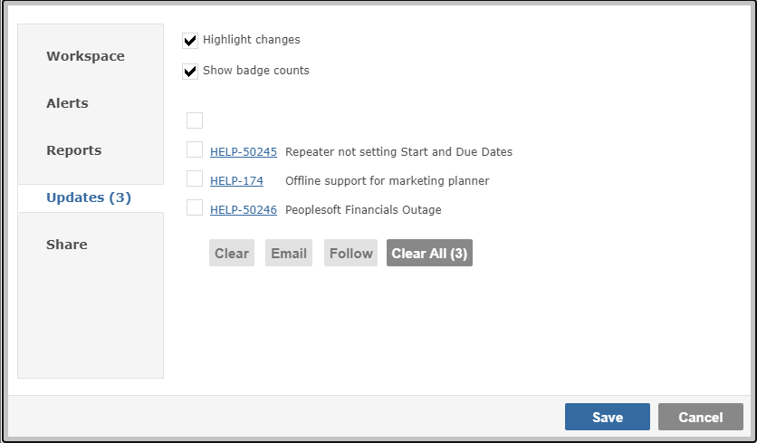
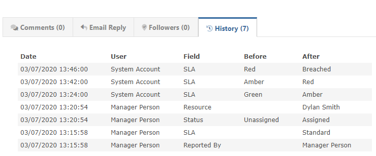

Your Workspace will show you what has been changed by other people.
To acknowledge the changes and clear them, hover over the badge count and click when it shows "x".
You can also see what has changed from within your Workspace. Click on the Workspace Menu, and if you have changes you will be taken straight to the Updates tab.

You can selectively clear updates, clear all, email the change(s) to other people, or choose to "Follow" specific items.
If you click on an item hyperlink, you will be taken to the View Item page, and if your Project Template has History enabled, you will be able to see the before/after detail of the changes.
